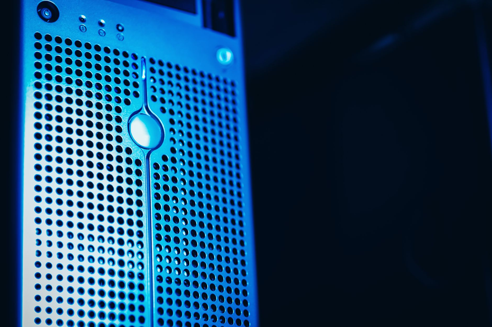

걸프·일본 AI 자본 선점, 한국 집행 속도 2년 뒤처졌다

2025년 1월 OpenAI·소프트뱅크·오라클이 미국 내 AI 인프라에 4년간 최대 5000억 달러를 투입하는 Stargate 프로젝트를 공식 발표했다. 1단계로 1000억 달러가 즉시 집행됐고, 텍사스·오하이오 데이터센터 부지 착공이 시작됐다. GPU 우선 배분 계약과 부지 전력 인프라 확보가 동시에 진행됐다.
걸프 국가들이 AI 인프라 투자를 국가 전략으로 전환했다. UAE는 G42를 앞세워 마이크로소프트와 10년간 1조 5000억 달러 규모 AI 파트너십을 체결했고, 사우디는 국영 AI 기업 HUMAIN과 엔비디아 간 100억 달러 규모 AI 칩 공급 계약을 2025년 5월 공식화했다. 두 나라 모두 국부펀드(ADQ·PIF)를 AI 인프라 직접 투자 수단으로 활용 중이다.
일본 소프트뱅크는 2024년 12월 미국 AI 스타트업과 인프라에 4년간 1000억 달러를 투자하겠다고 선언하고 Stargate의 핵심 출자자 지위를 확보했다. 이는 단순 금융 투자가 아니라 엔비디아 H100·B200 GPU 우선 배정권 및 AI 반도체 조달 우위를 동시에 확보하는 공급망 선점 전략이다.
한국 정부는 반도체·AI·데이터센터 삼각축에 1600조 원 규모 메가프로젝트를 선언했으나, 실제 집행 구조는 삼성·SK·현대차 등 민간 대기업 투자 계획을 합산한 것이 대부분이다. 정부 직접 출자 비중은 전체의 10% 미만이며, 2026년 출범 예정인 한국판 국부펀드의 초기 운용 규모는 10~20조 원 수준으로 걸프 국가의 단일 AI 계약 금액에도 미치지 못한다.
AI 인프라 투자 경쟁의 핵심은 GPU 우선 배정권이다. 걸프·일본이 Stargate와 엔비디아 직접 계약을 통해 H100·B200 우선 배분 구조를 잡아놓은 것은, AI 반도체 수급이 타이트해질 때 한국 기업이 조달 후순위로 밀릴 수 있음을 의미한다.
AI 공급망 재편은 투자 규모 싸움이 아니라 '누가 먼저 인프라 생태계를 잠그느냐'의 전쟁이다. 데이터센터 입지·전력 인프라·냉각 소재·서버 엔지니어링 역량이 묶음으로 선점된다. 한국이 소재 공급자로서 이 생태계에 편입될 기회의 창은 좁아지고 있다.
걸프 국가 국부펀드와 직접 계약 채널을 보유한 엔비디아·마이크로소프트가 최대 수혜다. GPU 단가 협상력과 우선 공급권을 동시에 확보했다. 냉각 소재·전력 변환 소재 공급사 중 중동 데이터센터 납품 이력이 있는 기업(버티브, 에어로제트)도 수혜 구간에 있다.
일본은 소프트뱅크를 통해 Stargate 공동 출자자 지위를 확보하면서 AI 반도체 조달 라인에 진입했다. 도쿄일렉트론(TEL)·신에쓰화학 등 반도체 소재 기업은 Stargate 산하 미국 팹 확장의 직접 수혜를 받는다.
한국 AI 인프라 소재 기업들은 삼성·SK 등 대기업 하청 구조를 통해서만 AI 데이터센터 소재 수요에 접근할 수 있다. 걸프·일본이 직계약으로 잠근 공급망에 한국 소재 기업이 참여하려면 미국·중동 현지 인증을 새로 받아야 하며, 인증 취득까지 최소 18~24개월이 소요된다.
한국 팹리스·반도체 설계 기업은 GPU 우선 배분 구조에서 후순위로 밀릴 경우 AI 칩 조달 비용이 추가 상승한다. HBM 수요가 견조해도 AI 서버 조립 완성품 단에서 한국 기업의 협상력은 구조적으로 약해지는 방향이다.
소재 기업 전략가라면 걸프 AI 인프라 프로젝트(사우디 HUMAIN, UAE G42)의 냉각재·전력 변환 소재 조달 입찰 공고를 지금부터 모니터링해야 한다. 인증 취득에 18~24개월이 걸리므로, 2027년 납품 목표라면 현지 인증 절차를 올해 안에 착수해야 한다.
AI 데이터센터 냉각 소재(액침냉각용 불활성 유체, 히트파이프용 구리·알루미늄 합금)와 전력 변환 소재(탄화규소 SiC 기판)는 Stargate·HUMAIN 등 대규모 발주가 집중되는 품목이다. 해당 소재 생산 능력 확보가 확인된 기업을 분리해 추적할 필요가 있다.
실제 조달 현장에서는 — 중동 데이터센터 프로젝트는 유럽·미국 납품 이력 없이는 샘플 평가 단계에서 배제된다. 걸프 국가 조달 담당자들이 요구하는 '레퍼런스 리스트'는 최소 3개 이상의 대형 프로젝트 납품 이력이다. 한국 소재 기업이 직접 진입하려면 유럽 또는 미국 현지 파트너와의 공동 입찰이 현실적인 첫 단계다.
이 포스팅은 쿠팡 파트너스 활동의 일환으로 수수료를 제공받습니다.